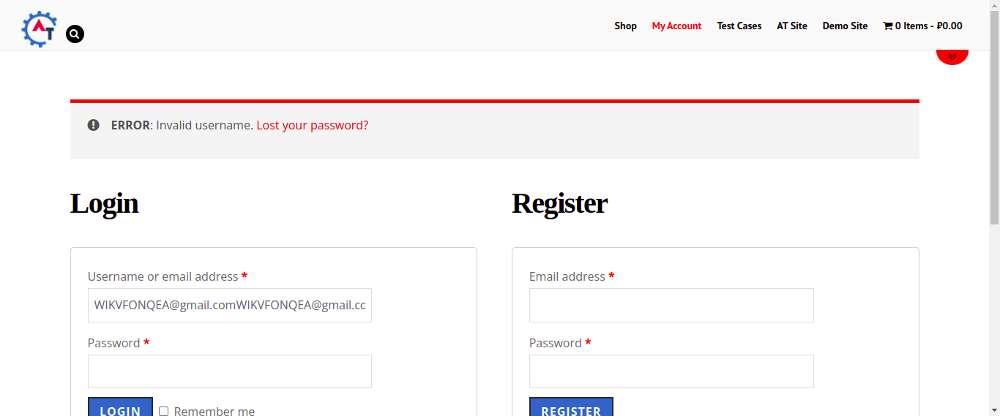

Started
Apr 28, 2022 11:43:24 AM
Ended
Apr 28, 2022 11:44:16 AM
Features Passed
0
Features Failed
2
Features
Scenarios
Steps
Timeline
Tags
| Name | Passed | Failed | Skipped | Others | Passed % |
|---|---|---|---|---|---|
| @MyAccount_AccountDetail_feature | 0 | 2 | 0 | 0 | 0% |
| @smoketest | 0 | 7 | 0 | 0 | 0% |
| @MyAccount_Address_feature | 0 | 4 | 0 | 0 | 0% |
System/Environment
| Name | Value |
|---|---|
| build | 1.1 |
| user | preyas |
| AppName | WaveXchange Project |
| os | Ubuntu |
-
feature to My account Page on Address(billing/shipping) functionality
11:43:25 AM / 00:00:51:415 Fail
feature to My account Page on Address(billing/shipping) functionality
04.28.2022 11:43:25 AM 04.28.2022 11:44:16 AM 00:00:51:415 · #test-id=1FailVerify My account page for billing address functionalityGiven user is on Home PageWhen user click on Myaccount linkThen user navigate to Register PageWhen user has enter "" & " " And click on login buttonStep skippedThen user navigate to myaccount pageStep skippedAnd click on Address linkStep skippedparallel.ApplicationHooks.tearDown(io.cucumber.java.Scenario)FailVerify country dropdown functionalityFailVerify country dropdown functionalityGiven user is on Home PageWhen user click on Myaccount linkThen user navigate to Register PageWhen user has enter "" & " " And click on login buttonThen user navigate to myaccount pageStep skippedAnd click on Address linkStep skippedAnd click on billing edit linkStep skippedThen click on country dropdownStep skippedAnd user enter j in country searchpanel Verify fetch country listStep skippedparallel.ApplicationHooks.tearDown(io.cucumber.java.Scenario)Verify_country_dropdown_functionalityFailVerify billing & Shipping address Edit(navigation) click functionalityGiven user is on Home PageWhen user click on Myaccount linkThen user navigate to Register PageWhen user has enter "" & " " And click on login buttonThen user navigate to myaccount pageAnd click on Address linkStep skippedAnd click on billing edit linkStep skippedThen user click on browser back buttonStep skippedAnd user click on shipping edit linkStep skippedAnd click on Address linkStep skippedparallel.ApplicationHooks.tearDown(io.cucumber.java.Scenario)FailVerify billing address on by default country functionalityGiven user is on Home PageWhen user click on Myaccount linkThen user navigate to Register PageWhen user has enter "" & " " And click on login buttonStep skippedThen user navigate to myaccount pageStep skippedAnd click on Address linkStep skippedAnd click on billing edit linkStep skippedThen by default country show as IndiaStep skippedparallel.ApplicationHooks.tearDown(io.cucumber.java.Scenario) -
feature to My account Page on Account Details functionality
11:43:25 AM / 00:00:47:153 Fail
feature to My account Page on Account Details functionality
04.28.2022 11:43:25 AM 04.28.2022 11:44:12 AM 00:00:47:153 · #test-id=3FailUpdate my account page related infoFailUpdate my account page related infoGiven user is on Home PageWhen user click on Myaccount linkThen user navigate to Register PageWhen user has enter "" & " " And click on login buttonStep skippedThen user navigate to myaccount pageStep skippedAnd click on Accountdetail linkStep skippedWhen user has entered profiledata "Preyas" & "Rana"Step skippedAnd click on savechanges buttonStep skippedparallel.ApplicationHooks.tearDown(io.cucumber.java.Scenario)
-
@MyAccount_AccountDetail_feature
2 tests
@MyAccount_AccountDetail_feature
2 failedStatus Timestamp TestName Fail 11:43:25 AM Update my account page related info feature to My account Page on Account Details functionality.Update my account page related infoFail 11:43:25 AM Update my account page related info feature to My account Page on Account Details functionality.Update my account page related info -
@smoketest
7 tests
@smoketest
7 failedStatus Timestamp TestName Fail 11:43:25 AM Verify My account page for billing address functionality feature to My account Page on Address(billing/shipping) functionality.Verify My account page for billing address functionalityFail 11:43:25 AM Update my account page related info feature to My account Page on Account Details functionality.Update my account page related infoFail 11:43:25 AM Update my account page related info feature to My account Page on Account Details functionality.Update my account page related infoFail 11:43:25 AM Verify country dropdown functionality feature to My account Page on Address(billing/shipping) functionality.Verify country dropdown functionalityFail 11:43:25 AM Verify country dropdown functionality feature to My account Page on Address(billing/shipping) functionality.Verify country dropdown functionalityFail 11:43:25 AM Verify billing & Shipping address Edit(navigation) click functionality feature to My account Page on Address(billing/shipping) functionality.Verify billing & Shipping address Edit(navigation) click functionalityFail 11:43:25 AM Verify billing address on by default country functionality feature to My account Page on Address(billing/shipping) functionality.Verify billing address on by default country functionality -
@MyAccount_Address_feature
4 tests
@MyAccount_Address_feature
4 failedStatus Timestamp TestName Fail 11:43:25 AM Verify My account page for billing address functionality feature to My account Page on Address(billing/shipping) functionality.Verify My account page for billing address functionalityFail 11:43:25 AM Verify country dropdown functionality feature to My account Page on Address(billing/shipping) functionality.Verify country dropdown functionalityFail 11:43:25 AM Verify billing & Shipping address Edit(navigation) click functionality feature to My account Page on Address(billing/shipping) functionality.Verify billing & Shipping address Edit(navigation) click functionalityFail 11:43:25 AM Verify billing address on by default country functionality feature to My account Page on Address(billing/shipping) functionality.Verify billing address on by default country functionality
-
org.openqa.selenium.WebDriverException
3 tests
org.openqa.selenium.WebDriverException
3 failedStatus Timestamp TestName Fail 11:44:11 AM When user has enter " " & " " feature to My account Page on Account Details functionality.Update my account page related info.When user has enter "" & " " Fail 11:44:11 AM When user has enter " " & " " feature to My account Page on Address(billing/shipping) functionality.Verify My account page for billing address functionality.When user has enter "" & " " Fail 11:44:12 AM When user has enter " " & " " feature to My account Page on Address(billing/shipping) functionality.Verify billing address on by default country functionality.When user has enter "" & " " -
org.openqa.selenium.StaleElementReferenceException
1 tests
org.openqa.selenium.StaleElementReferenceException
1 failedStatus Timestamp TestName Fail 11:44:10 AM And click on login button feature to My account Page on Address(billing/shipping) functionality.Verify country dropdown functionality.And click on login button -
org.openqa.selenium.NoSuchSessionException
5 tests
org.openqa.selenium.NoSuchSessionException
5 failedStatus Timestamp TestName Fail 11:44:12 AM parallel.ApplicationHooks.tearDown(io.cucumber.java.Scenario) feature to My account Page on Account Details functionality.Update my account page related info.parallel.ApplicationHooks.tearDown(io.cucumber.java.Scenario)Fail 11:44:12 AM parallel.ApplicationHooks.tearDown(io.cucumber.java.Scenario) feature to My account Page on Address(billing/shipping) functionality.Verify billing address on by default country functionality.parallel.ApplicationHooks.tearDown(io.cucumber.java.Scenario)Fail 11:44:12 AM parallel.ApplicationHooks.tearDown(io.cucumber.java.Scenario) feature to My account Page on Address(billing/shipping) functionality.Verify My account page for billing address functionality.parallel.ApplicationHooks.tearDown(io.cucumber.java.Scenario)Fail 11:44:16 AM Then user navigate to myaccount page feature to My account Page on Address(billing/shipping) functionality.Verify billing & Shipping address Edit(navigation) click functionality.Then user navigate to myaccount pageFail 11:44:16 AM parallel.ApplicationHooks.tearDown(io.cucumber.java.Scenario) feature to My account Page on Address(billing/shipping) functionality.Verify billing & Shipping address Edit(navigation) click functionality.parallel.ApplicationHooks.tearDown(io.cucumber.java.Scenario)